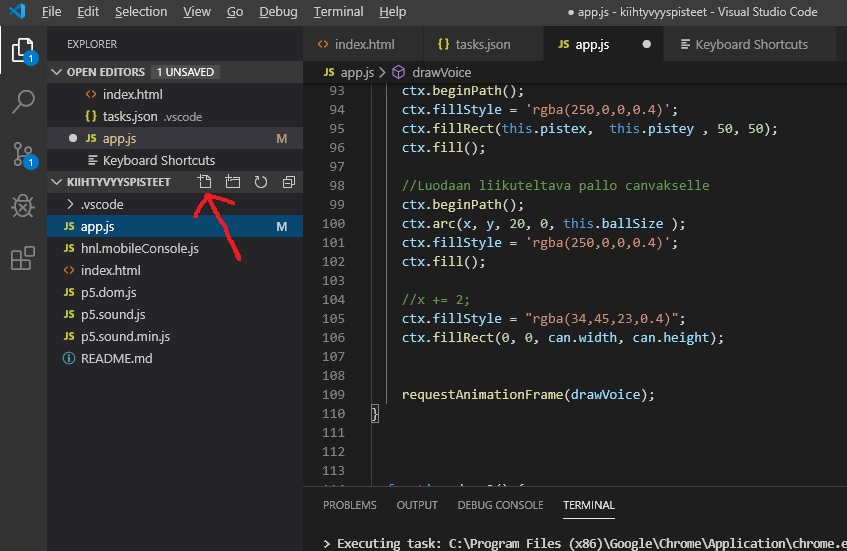

Visual Studio Code-ohjeita
Lataa ja asenna Visual Studio Code osoitteesta
code.visualstudio.com/download
Oletusasetusten pitäisi olla ok
Luo koneellesi kansio nimeltä ”EkaSPA” ja avaa se Visual Studio Codessa –> File -> Open Folder.
Lisää Visual Studio Codeen GitHub-lisäosa
-> Visual Studio Codessa valitse View->Extensions (tai paina Ctrl+Shift+X) ja kirjoita GitHub. Valitse ensimmäinen tulos ja Install.
Luo nuolen osoittamalla kuvakkeella uudet tiedostot ja nimeä ne index.html ja app.js

Siirry kohtaan tehtävä2